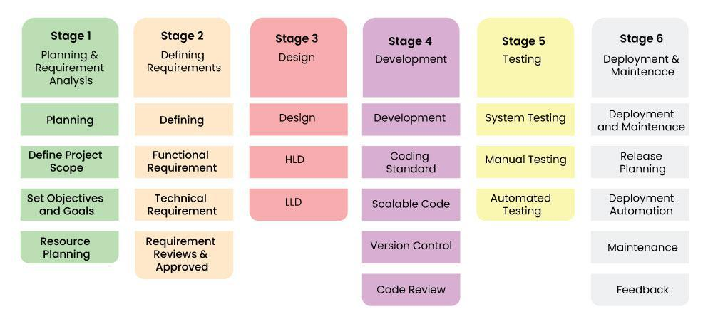
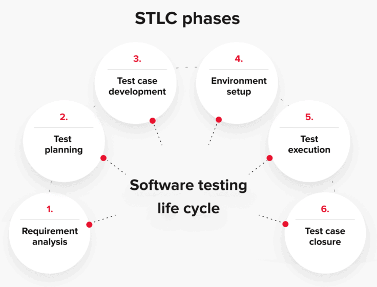
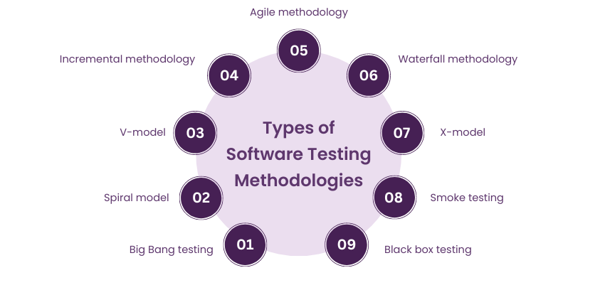
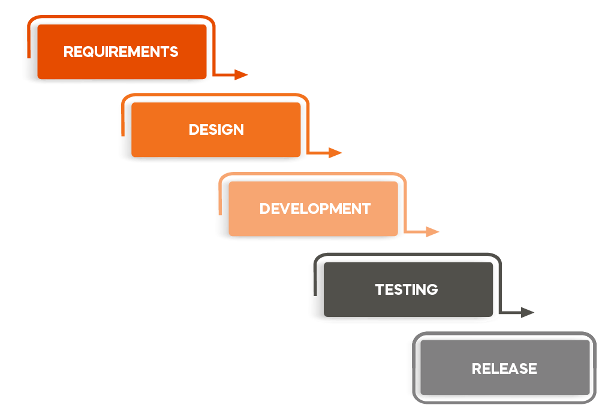
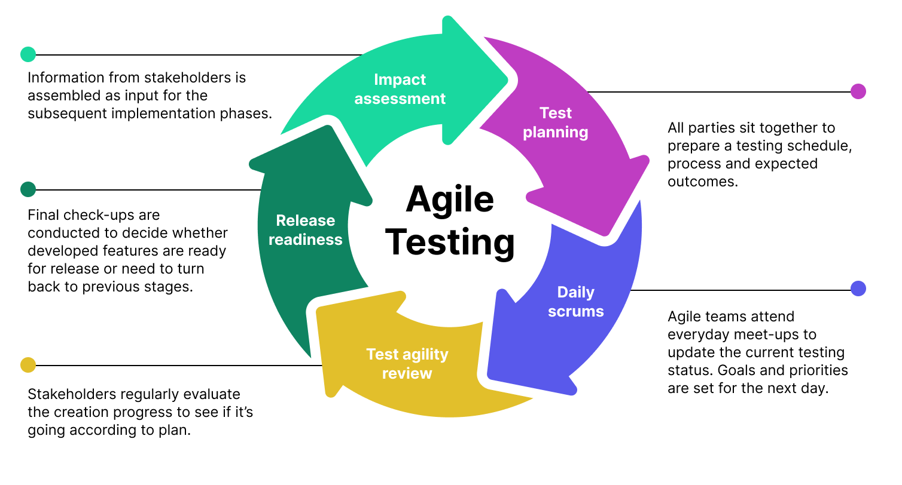
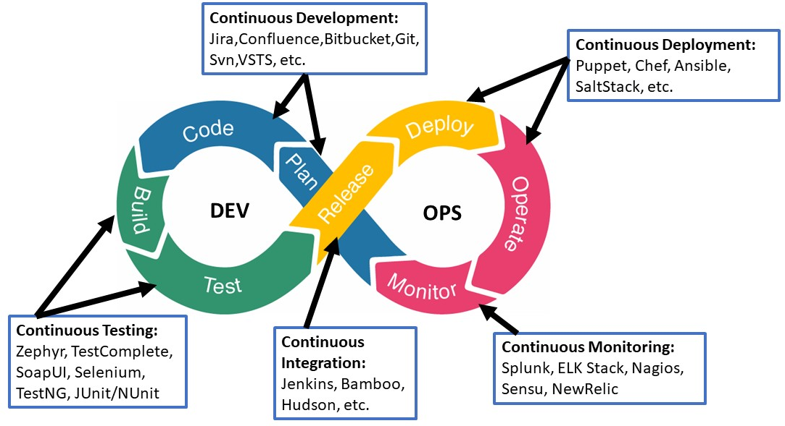
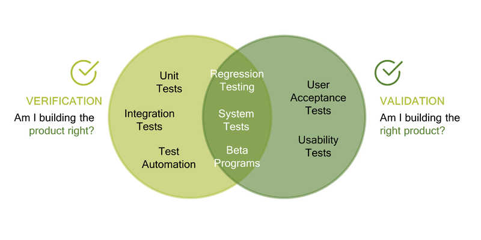

01: Introduction
02: Approaches of Testing
03: Testing During SDLC
04: Requirement Traceability Matrix
05: Essentials of Software Testing
06: Principles of Software Testing
07: Importance of Software Testing
08: Process Problems Faced by Testing
09: Software Testing Terminology
10: Software Testing Life Cycle
11: Benefits of STLC
12: Software Testing Methodology
12.01: Waterfall Method
12.02: Agile Testing
12.03: DevOps Testing
13: Verification & Validation
Introduction
- Software testing is the process of evaluating a software program to find bugs, verify it meets expectations, and ensure it functions as intended.
- It's a crucial part of the software development lifecycle.
- Software testing aims to deliver a polished, high-quality product that meets user requirements and expectations.
Approaches of Testing
-
There are two main approaches to testing:
- A human tester interacts with the software to assess its functionality.
- Testers use scripts or tools to automate repetitive tasks, saving time and effort.
Testing During SDLC

- Requirements Analysis: Testers are involved early on to understand the software's purpose, functionalities, and user needs. This helps identify potential testing areas and ensure requirements are clear and testable.
- Design Phase: Testers collaborate with designers to review the software's architecture and identify potential design flaws that could lead to testing challenges later.
- Unit Testing: Individual software units (modules) are tested by developers to ensure they function as designed.
- Integration Testing: Once units are tested, they're integrated to form a larger system. Testers verify if these integrated components work seamlessly together.
- System Testing: The entire software application is tested as a whole to ensure it meets all functional and non-functional requirements (performance, usability, etc.).
- Acceptance Testing: Real users or potential customers test the software to provide feedback on its usability and functionality from an end-user perspective. This helps identify any user interface or experience issues.
Requirement Traceability Matrix
- A Requirement Traceability Matrix (RTM), also known as a Cross-Reference Matrix (CRM), is a table-like document used in software development and other fields to track the relationships between different project artifacts.
- It essentially creates a map that shows how requirements are implemented and verified throughout the development process.
- Improved Verification and Validation: Ensures all requirements are addressed by design and testing processes.
- Enhanced Impact Analysis: Helps understand how changes to a requirement affect other parts of the project.
- Stronger Project Management: Provides a centralized view of project progress and potential issues.
- Efficient Change Management: Simplifies tracking the impact of changes on related deliverables.
- Improved Verification and Validation: Ensures all requirements are addressed by design and testing processes.
- Enhanced Impact Analysis: Helps understand how changes to a requirement affect other parts of the project.
- Stronger Project Management: Provides a centralized view of project progress and potential issues.
- Efficient Change Management: Simplifies tracking the impact of changes on related deliverables.
Benefits of using RTM:
Essentials of Software Testing
-
Robust Testing Strategy:
- This high-level plan outlines the overall testing approach for the project.
- It defines what types of testing will be conducted (functional, performance, etc.), the order of testing, and the resources needed.
- A well-defined strategy ensures a targeted and efficient testing effort.
- This plan dives deeper into specifics, outlining the individual test cases that will be executed.
- Each test case should map back to specific requirements to ensure comprehensive coverage.
- The plan should also include details on the testing environment, data required, and expected results.
- Effective test cases are the backbone of thorough testing.
- They should be clear, concise, and cover a wide range of scenarios, including positive and negative test cases.
- Strong test cases help identify defects and edge cases that might otherwise be missed.
- The quality of your test data significantly impacts the effectiveness of testing.
- You'll need a variety of data sets to simulate real-world usage and expose potential issues.
- This may include valid, invalid, and boundary value data.
- A stable and reliable testing environment is crucial for accurate and repeatable test results.
- The environment should mirror the production environment as closely as possible to avoid surprises when the software is deployed.
- A system for logging and tracking discovered defects is essential.
- This allows testers to document issues, prioritize them based on severity, and track their resolution throughout the development process.
- Effective testing requires a skilled team with a deep understanding of testing methodologies, tools, and best practices.
- Testers should be able to analyse requirements, design test cases, and think critically to uncover potential issues.
- Throughout the testing process, clear communication and collaboration between testers, developers, and other stakeholders are essential.
- This ensures everyone is aware of identified issues and works together to resolve them effectively.
Detailed Testing Plan:
Well-designed Test Cases:
Relevant Test Data:
Ideal Testing Environment:
Defect Tracking and Reporting:
Testing Expertise and Skills:
Communication and Collaboration:
Principles of software testing:
- Testing Shows Presence of Defects, Not Absence: Testing aims to uncover bugs and malfunctions, not definitively prove software is flawless.
- Early Testing Saves Time and Money: Identifying defects early in the development lifecycle is much cheaper and easier to fix than waiting until later stages.
- Defect Clustering: The Pareto Principle (80/20 rule) often applies in software testing.
- Pesticide Paradox: Repeatedly using the same tests with minor variations may not uncover new defects.
- Testing is Context-Dependent: The testing strategy should be tailored to the specific software, its intended use, and the project's priorities.
- Absence of Errors Fallacy: Finding no defects during testing doesn't guarantee a perfect product.
Importance of software testing:
- Improved Software Quality: Testing helps identify and fix bugs, leading to a more robust, reliable, and user-friendly product.
- Reduced Risk of Failure: By proactively uncovering issues, testing minimizes the risk of software failures after deployment.
- Enhanced Security: Testing helps identify security vulnerabilities that could be exploited by attackers.
- Pesticide Paradox: Repeatedly using the same tests with minor variations may not uncover new defects.
- Testing is Context-Dependent: The testing strategy should be tailored to the specific software, its intended use, and the project's priorities.
- Absence of Errors Fallacy: Finding no defects during testing doesn't guarantee a perfect product.
Process Problems Faced by Testing
- Incomplete Requirements: Testers often face issues when requirements are not well-defined or are incomplete.
- Insufficient Test Planning: Poor test planning can lead to unorganized and ineffective testing efforts.
- Lack of Resources: Testing teams may lack the necessary resources, such as skilled personnel, tools, and environments.
- Inadequate Test Coverage: Use risk-based testing approaches to prioritize test cases and ensure critical areas are thoroughly tested.
- Time Constraint: Testing often gets squeezed at the end of the development cycle, leading to rushed testing.
- Communication Gaps: Foster open communication channels and use collaboration tools to improve information sharing.
Software Testing Terminology
Software Testing terminology means collection of inputs and expected outputs
- Failure: The inability of a system or component to perform a required function according to its specification.
- Fault / Defect / Bug: Fault is a condition that in actual causes a system to produce failure. It can be said that failures are manifestation of bugs.
- Error: When a developer or a team makes any mistake in any phase of SDLC, errors are produced. It might be a typographical error, a misleading of a specification, a misunderstanding of what a subroutine does and so on. Thus, error is a very general term used for human mistakes.
- Testware: The documents created during the testing activities are known as Testware.
- Incident: Any problem (such as queries, defect reports, or test script failures) that requires investigation by the test team.
- Test bed: Test bed is an environment where testers run their test cases. It includes hardware, software, network configuration, and other necessary elements for performing tests.
- Test Case: A test case is a set of actions and conditions used to verify a feature or functionality of a software application.
- Test Oracle: to judge the success or failure of a test
STLC: Software Testing Life Cycle

Software Testing Life Cycle (STLC) is a sequence of different activities performed by the testing team to ensure that the software product meets the quality standards. The phases are:
- Requirement Analysis: Testers are involved early on to understand the software's purpose, functionalities, and user needs. This helps identify potential testing areas and ensure requirements are clear and testable.
- Test Planning: A comprehensive plan is developed, outlining the testing strategy, scope, resources, schedule, and deliverables.
- Test Case Design and Development: Detailed test cases are designed based on requirements and test plans to validate specific functionalities.
- Test Environment Setup: The test environment is prepared to replicate the production environment, ensuring accurate test results.
- Test Execution: Test cases are executed, and results are documented to identify any discrepancies between expected and actual outcomes.
- Defect Reporting and Tracking: Any defects found are reported, and their resolution is tracked through to closure.
- Test Closure: Final test reports are generated, summarizing the testing process, results, and any lessons learned for future projects.
Benefits of STLC:
- Improved Software Quality: STLC helps identify and fix bugs early in the development process, leading to a more robust and reliable software product.
- Reduced Development Costs: Fixing bugs later in the development cycle is expensive. STLC helps catch issues early, saving time and resources.
- Enhanced User Experience: By ensuring the software meets user requirements, STLC contributes to a more positive user experience.
Software Testing Methodology

- Software testing methodology refers to the overall strategy and approach used to guide the software testing process. It defines how you'll achieve your testing goals, considering factors like project type, development lifecycle, and resources. There are several popular methodologies, each with its own strengths and weaknesses.
- Traditional, sequential approach.
- Testing happens after development is complete.
- Pros: Well-defined phases, easy to manage for small projects.
- Cons: Inflexible, doesn't adapt to changes well. May miss bugs due to late testing.
- Iterative and incremental approach.
- Testing happens alongside development in short sprints.
- Pros: Adaptable to changing requirements, faster feedback loop.
- Cons: Requires strong communication and collaboration between testers and developers. May require more automation for efficiency.
- Focuses on Continuous Integration and Continuous Delivery (CI/CD).
- Testing is integrated throughout the development pipeline.
- Pros: Fast feedback loop, promotes quality at every stage.
- Cons: Requires a strong automation strategy and cultural shift within teams.
Waterfall Model:

Agile Testing

DevOps Testing

Verification & Validation

- Verification is the process of checking that software achieves its goal without any bugs.
- It is the process to ensure whether the product that is developed is right or not.
- It verifies whether the developed product fulfils the requirements that we have.
- Verification is static testing.
- Validation is the process of checking whether the software product is up to the mark or in other words product has high-level requirements.
- It is the process of checking the validation of the product i.e. it checks what we are developing is the right product.
- It is validation of the actual and expected products.
- Validation is dynamic test.